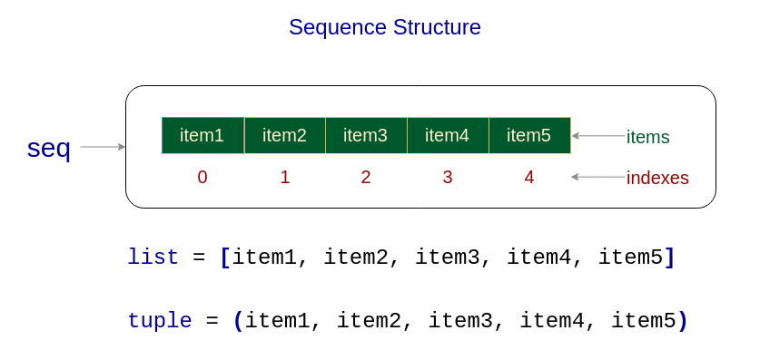
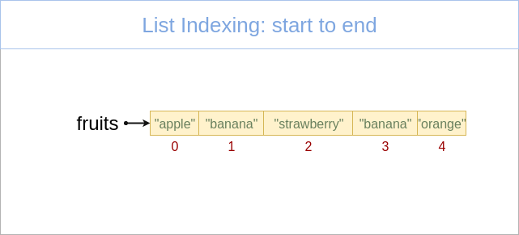

Keyboard shortcuts:
N/SpaceNext Slide
PPrevious Slide
OSlides Overview
ctrl+left clickZoom Element
If you want print version => add '
?print-pdf' at the end of slides URL (remove '#' fragment) and then print.
Like: https://progressbg-python-course.github.io/...CourseIntro.html?print-pdf
Data Structures
Created for
Iva E. Popova, 2016-2025,

Sequence Data Types
(Basic data structures)
Created for.
Iva E. Popova, 2016-2025,
Sequence Data Types - Overview
Sequence Data Types - Overview
What is a Sequence?
- Sequence data types are a fundamental concept, encompassing several built-in types used to store collections of data.
- Understanding these types is key to performing a wide range of tasks in Python, from data manipulation to looping.
- A sequence in Python is a container, storing ordered collection of objects.
- The main sequence types are list, tupple, range and string.

What is a Sequence?
- Each item in a sequence is assigned a number - its position or index.
- Indexes starts counting from 0.
- All sequence data type in Python supports common sequence operations.
length, indexing, slicing, concatenation,.
repetition, membership test, min, max, count, index- Each sequence data type has also own methods for performing specific operations.
What is a Sequence?
{kind=link}
What is a Sequence? - examples
# list:
fruits = ["apple", "banana", "strawberry", "banana", "orange"]
# tuple:
point3d = (4, 0, 3)
# range:
digits = range(0,10)
# string:
user_name="ada byron"
- The main Sequence Data Types in Python are:
- Lists.
- Tuple.
- Range.
- Strings.
Lists
Lists
What is a List?
- A list is a mutable (i.e. changeable) sequence of objects.
- we can add or delete elements to the list.
- Lists, being mutable sequence, can grow or shrink.
- There is no restriction of the type of the objects being in a list.
- The objects in a list can repeat many times.
- Lists are general-purpose data structure.
Create list by literal
- A List literal is denoted by a square brackets
- Items in the list are separated by comma
### create empty list:
empty_list = []
### create list of numbers:
users = [1,2,3,4,5]
### create list of lists
matrix = [
[1,2,3],
[4,5,6],
[7,8,9]
]
Retrieve item from list
item = list_name[index]
### create list:
fruits = ["apple", "banana", "strawberry", "banana", "orange"]
### retrieve the first item in the list:
item1 = fruits[0]
# apple
### retrieve third item in the list.
item3 = fruits[2]
# strawberry
# retrieve last item in the list:
itemN = fruits[-1]
# orange
We will discuss more indexing operation in Common Sequence Operations.
Change list item
list_name[index] = value
### create list:
fruits = ["apple", "banana", "strawberry"]
### Change second list item
fruits[1] = "plum"
print( fruits )
# ['apple', 'plum', 'strawberry']
### Change last list item
fruits[-1] = "orange"
print( fruits )
# ['apple', 'plum', 'orange']
Tuples
Tuples
What is a Tuple?
- A tuple is immutable (i.e. not changeable) sequence of data.
- once created a tuple can not be changed! No grow or shrink can happens.
- Useful for fixed data.
- Tuples are faster than lists and consumes less memory, but they are not general-purpose.
Create tuple from literal
- Tuple literal is denoted by parentheses
- Items in the tuple are separated by comma
- A single item tuple is created with trailing comma, like
(1,)
### create empty tuple:
t = ()
print(type(t))
#<class 'tuple'>
### create tuple with one element - note the trailing comma!
# if you write t = (99), it will be an integer, not tuple
t = (99,)
print(type(t))
# <class 'tuple'>
n = (99)
print(type(n))
<class 'int'>
### create tuple of 3 elements:
point3d = (4, 0, 3)
print(point3d)
# (4, 0, 3)
Retrieve item from tuple
item = tuple_name[index]
# create a tuple
address = ('Bulgaria', 'Sofia', 'Nezabravka str', 14)
# retrieve tuple items
country = address[0]
town = address[1]
street = address[2]
street_num = address[3]
print(country, town, street, street_num)
# Bulgaria Sofia Nezabravka str 14
Examples
### create tuple with 3 elements:
ada_birth_date = (10, "December", 1815)
# retrieve tuple elements:
ada_birth_day = ada_birth_date[0]
ada_birth_month = ada_birth_date[1]
ada_birth_year = ada_birth_date[2]
print("Ada is born on {} {} in {}".format(ada_birth_month, ada_birth_day, ada_birth_year))
# Ada is born on December 10 in 1815
Change tuple? No Way!
- Tuples are immutable and can not be changed!
### change a tuple item:
address[0] = "France"
# TypeError: 'tuple' object does not support item assignment
Change tuple's mutable value? - yes, you can
- Tuple is immutable, but this does not means the we can not reassign it's mutable value, like list
t = ([1,2,3],)
# change third element in the list inside a tuple:
t[0][2] = 100
print(t)
#([1, 2, 100],)
Lists vs Tuples
Lists vs Tuples
- Performance
- Tuples requires less memory and are faster than lists
- Usage
- Use list, when you want to add/remove/change items in the list
- Use tuple, when you want to preserve your data from being changed. Or when you need to optimize your program.
Conversion Between Sequence Types
Conversion Between Sequence Types
- You can convert between different sequence types, using
list()andtuple()built-in functions.
address = ('Bulgaria', 'Sofia', 'Nezabravka str', 14)
# convert value in address to list
address = list(address)
address[3] = 25
print(address)
# ['Bulgaria', 'Sofia', 'Nezabravka str', 25]
Range Object
Range Object
Characteristics of a Range Object
- Immutability:
- Once a range is created, it cannot be altered.
- Memory Efficiency:
- A range object uses a small, fixed amount of memory, regardless of the size of the range it represents. It generates the numbers in the range on demand as you iterate over it, rather than storing them all in memory.
- Usage:
- Range objects are often used in loops to repeat an action a specific number of times.
- They are also used when you need a sequence of numbers, but you don't want to use the memory to store all of them at once.
Syntax
range(stop)
range(start, stop[, step])
- stop is the only required argument, and it denote that range of generated integers will end at stop - 1
- start is optional and if omitted defaults to 0
- step is optional and if omitted defaults to 1.
- start, stop and step must be integers!
- step can't be 0 (or "ValueError" is raised), but can be negative integer.
- If the given arguments did not form a sequence, an empty sequence will be returned.
- Reference: ranges @python3 docs
Examples
range(0,10)
# generates the sequence: [0, 1, 2, 3, 4, 5, 6, 7, 8, 9]
range(10)
# same as above
range(2, 10, 2)
# generates the sequence: [2, 4, 6, 8]
range(9, -1, -1)
# generates the sequence: [9, 8, 7, 6, 5, 4, 3, 2, 1, 0]
range(-3, 4)
# generates the sequence: [-3, -2, -1, 0, 1, 2, 3]
range(9, -1, 1)
# incorrect sequence formulae, will return empty sequence
Print range sequence
- Note, that when you just print a range object it will not return the sequence of numbers, but just the formula:
- If you want to print the generated sequence, you can use the builtin
list()ortuple()function: - But the most common way to use the range items is to loop over them:
r = range(0, 10, 2)
print(r)
# range(0, 10, 2)
r = range(0, 10, 2)
print(list(r))
# [0, 2, 4, 6, 8]
### iterate from 0 up to 10, step = 1 (default)
for i in range(10):
print(i, end=" ")
# 0 1 2 3 4 5 6 7 8 9
Common Sequence Operations
Common Sequence Operations
Next operation can be used on all sequence types, with the exception that range() objects can not be concatenated or repeated (but the sequences they produced can).
| Operation | Operator |
|---|---|
| Concatenation | + |
| Repetition | * |
| Membership Testing | in (not in) |
| Indexing | [i] |
| Slicing | [i:j] |
- Reference: Common Sequence Operations
Concatenation +
- Concatenate two sequences and return the resulting sequence
- Only srings, lists and tuples support the concatenation operation.
- ranges can not be concatenated.
### Let's have two lists:
fruits = ["apple", "banana", "strawberry"]
numbers = [1,2,3]
### We can concatenate them:
concat_list = fruits + numbers
print(concat_list)
# ['apple', 'banana', 'strawberry', 1, 2, 3]
Concatenation - lists example
num_list = [1,2,3]
alpha_list = ["a", "b", "c"]
conc_list = num_list + alpha_list
print(conc_list)
# [1, 2, 3, 'a', 'b', 'c']
Note, that the result is a list!
Concatenation - tuples example
date1 = (31, "December", 2017)
date2 = (10, "Mart", 1999)
conc_date = date1 + date2
print(conc_date)
# (31, 'December', 2017, 10, 'Mart', 1999)
Note, that the result is a tuple!
Repetition *
- Repeats a sequence a given number of times and return the resulting sequence
- The multiplier must be an integer value!
- Only strings, lists and tuples support the repetition operation.
- ranges can not be repeated.
### Let's have a list:
numbers = [1, 2, 3]
### Repetition
rep_list = numbers * 3
print(rep_list)
# [1, 2, 3, 1, 2, 3, 1, 2, 3]
Repetition - example
num_list = [1, 2, 3]
alpha_list = ["a", "b", "c"]
print(num_list*3)
print(alpha_list*3)
# [1, 2, 3, 1, 2, 3, 1, 2, 3]
# ['a', 'b', 'c', 'a', 'b', 'c', 'a', 'b', 'c']
Membership Testing in, not in
- x in sequence
- returns True if x is member of sequence
- returns False if x is NOT member of sequence
- x not in sequence
- returns True if x is NOT member of sequence
- returns False if x is member of sequence
Membership Testing - list example
### Let's have two list:
fruits = ["apple", "banana", "strawberry"]
numbers = [1, 2, 3]
### Membership Testing (in):
print("banana" in fruits)
# True
print("banana" in numbers)
# False
### Membership Testing (not in):
print("banana" not in fruits)
# False
print("banana" not in numbers)
# True
Membership Testing - range example
# Let's have a range:
r = range(0,10)
print(3 in r)
# True
print(21 in r)
# False
Indexing (positive)
{kind=link}
- Indexing allows access to individual elements of sequences
- First sequence item is with index 0.
- Next sequence item indexes increments with 1
Indexing (positive) - example
### create list of numbers:
numbers = [1,2,3,4,5]
### index from start to end:
print(numbers[0],numbers[1],numbers[2],numbers[3],numbers[4])
# 1 2 3 4 5
Indexing (negative)

- Last list item is with index -1
- Next sequence item indexes decrements with 1
Indexing (negative) - example
### create list of numbers:
numbers = [1,2,3,4,5]
### index from end to start:
print(numbers[-1],numbers[-2],numbers[-3],numbers[-4],numbers[-5])
# 5 4 3 2 1
Indexing (negative) - use case
- The pythonic way to get the last element of a sequence is by using the
-1index, not bylen()-1
fruits = ["apple", "banana", "strawberry"]
# the pythonic way to print last element
print(fruits[-1])
# "strawberry"
# not pythonic (though it works):
print(fruits[len(fruits)-1])
# "strawberry"
Slicing
- Slicing is a powerful feature in Python that allows you to extract a subset of elements from sequence types like strings, lists, and tuples.
- Understanding slicing is crucial for effective data manipulation and retrieval in Python programming.
- Basic Syntax:
start: The starting index of the slice (inclusive).stop: The ending index of the slice (exclusive).step: The step size or increment. If omitted, it defaults to 1.
sliced = sequence[start:end:step]
a[start:end] # get items with indexes from start through end-1
a[start:] # get items with indexes from start through the rest of the array
a[:end] # get items with indexes from the beginning through end-1
a[:] # get all items (a copy of the whole sequence)
Slicing - Examples
# Slicing a String
greeting = "Hello, World!"
print(greeting[1:5]) # 'ello'
# Slicing a List
numbers = [0, 1, 2, 3, 4, 5, 6, 7, 8, 9]
print(numbers[2:5]) # [2, 3, 4]
# Slicing with Step
print(numbers[1:9:2]) # [1, 3, 5, 7]
# Get first 3 elements
print(numbers[:3]) # [0, 1, 2]
# Get last 3 elements
print(numbers[:-4:-1]) # [9, 8, 7]
# Reverse Slicing
print(numbers[::-1]) # [9, 8, 7, 6, 5, 4, 3, 2, 1, 0]
# Slice all elements (copy list):
numbers_copy = numbers[:]
print(numbers_copy) # [0, 1, 2, 3, 4, 5, 6, 7, 8, 9]
More on lists
More on lists
Create list from sequence: list()
- With
list()function we can create a list from any sequence:
### empty list:
l = list() # equivalent to l = []
### list from tuple:
point3d = (4, 0, 3)
point3d_list = list(point3d)
print(point3d_list)
# [4, 0, 3]
### list from range:
digits = range(0, 10)
digits_list = list(digits)
print(digits_list)
# [0, 1, 2, 3, 4, 5, 6, 7, 8, 9]
### list from string:
user_name = "ada byron"
user_name_list = list(user_name)
print(user_name_list)
# ['a', 'd', 'a', ' ', 'b', 'y', 'r', 'o', 'n']
Basic List Methods
### Create list of fruits:
fruits = ["apple", "banana", "strawberry"]
### Insert item at the end of the list:
fruits.append("plum")
print(fruits)
# ['apple', 'banana', 'strawberry', 'plum']
### Insert item in specified position (by the index given as first parameter)
fruits.insert(2, "NEW")
print(fruits)
# ['apple', 'banana', 'NEW', 'strawberry', 'plum']
### Remove last list item and retrieve it:
item = fruits.pop()
print(item, fruits)
# plum ['apple', 'banana', 'NEW', 'strawberry']
### Remove item at specified position and retrieve it::
item = fruits.pop(2)
print(item, fruits)
# NEW ['apple', 'banana', 'strawberry']
### Remove the first item from a list matching the given value:
fruits.remove("banana")
print(fruits)
# ['apple', 'strawberry']
### Reverse the items of a list in place:
fruits.reverse()
print(fruits)
# ['strawberry', 'banana', 'apple']
### Sort list "in-place". I.e. the list itself will be sorted, will not create a copy:
l = [1,3,4,2]
l.sort()
print(l)
# [1, 2, 3, 4]
For more - check the: python.org tutorial
Lists of lists
- A list item can be any data type, including list, tuples and so on.
### create list of lists:
matrix = [
[1,2,3],
[4,5,6],
[7,8,9],
]
### retrieve the first element from the first list:
print(matrix[0][0] )
# 1
### retrieve the last element from the first list:
print(matrix[0][-1])
# 3
### retrieve the first element from the last list:
print(matrix[-1][0])
# 7
### retrieve the last element from the last list:
print(matrix[-1][-1])
# 9
Slicing columns from "lists of lists" ?
- Python did not support syntax to slice columns from "multi dim" looking list
m = [
[1,2,3],
[4,5,6],
[7,8,9],
]
# trying to slice the second column ([2,5,8]):
print(m[:,1])
# TypeError: list indices must be integers or slices, not tuple
multi-dimensional arrays
- The package numpy contains powerful N-dimensional array objects and other numerical operations (we'll go into it in later topics).
- In order to use it, you need to install it first (we'll cover deeply modules instalation topic later), for now just open a terminal ad paste:
- Crete next python file (python_numpy_demo.py):
- And execute it
pip install numpy
import numpy
# lets create a python list
m = [
[1,2,3],
[4,5,6],
[7,8,9],
]
# create a numpy array from that list:
arr = numpy.array(m)
# now we can easily use numpy's multi-dim slicing:
print(arr[:,1])
#[2 5 8]
print(type(arr[:,1]))
[2 5 8]
<class 'numpy.ndarray'>
List of tuples
- A common use case for List of Tuples is storing 2D or 3D coordinates, e.g., [(x1, y1), (x2, y2)].
### create list_of_tuples representing a point 3D coordinates:
points = [
(1,2),
(3,4),
(5,6)
]
### retrieve the first element from the first tuple:
print(points[0][0])
# 1
### retrieve the last element from the first tuple:
print(points[0][-1])
# 2
### retrieve the first element from the last tuple:
print(points[-1][0])
# 5
### retrieve the last element from the last tuple:
print(points[-1][-1])
# 6
Tuple of lists
- A common use case for Tuple of Lists is when you need a simple and effective structure for storing grouped collections with fixed structure, like organizing product names with their corresponding quantities, e.g., (['Shirt', 'Pants'], [20, 35]).
- Key Points:You can modify elements inside the lists within the tuple (e.g., the quantity), but you cannot change the structure of the tuple itself (e.g., reassigning products[0])
# Tuple of lists: product names and their quantities
products = (
['Shirt', 'Pants'],
[20, 35]
)
# Printing product 1 details
print(f"Product: {products[0][0]}, Quantity: {products[1][0]}")
# Product: Shirt, Quantity: 20
### change the quantity for product 1:
users[0][2] = 100
print(users[0])
# ['Ivan', 'Ivanov', 100]
### try to change the tuple itself:
users[0] = ["Petyr", "Petrov", 45]
# TypeError: 'tuple' object does not support item assignment
Copy Lists (Shallow vs Deep Copy)
Copy Lists
Copy by reference
- In Python, lists are mutable objects, and when you assign a list to another variable, you are copying the reference (not the actual data). This means both variables point to the same underlying list in memory.
new_list = original_listdoes not create a new list. Instead, new_list references the same list object as original_list. Both 'new_list' and 'original_list' refer to the exact same list in memory.- To check if two variables refer to the exact same list (or object) in memory, you can use the is operator and/or the id() function
# Original list
original_list = [1, 2, 3]
# Assigning reference of the original list to new_list
new_list = original_list
# Modifying new_list also affects original_list
new_list[0] = 100
print(original_list) # Output: [100, 2, 3]
print(new_list) # Output: [100, 2, 3]
original_list = [1,2,3]
new_list = original_list # new_list refers to the same object as original_list
# Get the memory address (id) of both variables
print(f"Memory address of original_list: {id(original_list)}")
print(f"Memory address of new_list: {id(new_list)}")
# Check if both variables refer to the same object in memory
print( original_list is new_list)
Shallow Copy
- A shallow copy in Python refers to copying an object, but not recursively copying the objects contained within it. In a shallow copy, the new object is a new container (like a new list), but the elements inside the container are still references to the same objects as those in the original container
# Original list with nested list (mutable object inside)
original_list = [1, 2, [3, 4]]
# Create a shallow copy using slicing
shallow_copy = original_list[:]
# Modify the inner list in the shallow copy
shallow_copy[2][0] = 99
# Output the lists
print(f"Original list: {original_list}") # [1, 2, [99, 4]]
print(f"Shallow copy: {shallow_copy}") # [1, 2, [99, 4]]
# Check if both lists are the same object
print(original_list is shallow_copy) # False, because the outer lists are different
print(original_list[2] is shallow_copy[2]) # True, because the inner list is shared
How to create a Shallow Copy
- Slicing for lists:
- copy() method for lists:
- copy() function from the copy module (for general objects like lists, dictionaries, etc.):
new_list = original_list[:]
new_list = original_list.copy()
import copy
new_object = copy.copy(original_object)
Deep Copy
- A deep copy in Python means creating a new object and recursively copying all objects found within the original object, including the nested ones
- The new object and its elements are completely independent of the original object.
- Deep copy are created by
copy.deepcopy(l)method from thecopymodule - Deep copy is generally slower and more memory-intensive than shallow copy because it involves creating copies of all nested objects.
import copy
# Original list with nested list (mutable object inside)
original_list = [1, 2, [3, 4]]
# Create a deep copy
deep_copy = copy.deepcopy(original_list)
# Modify the inner list in the deep copy
deep_copy[2][0] = 99
# Output the lists
print(f"Original list: {original_list}") # [1, 2, [3, 4]]
print(f"Deep copy: {deep_copy}") # [1, 2, [99, 4]]
# Check if both lists are the same object
print(original_list is deep_copy) # False, because they are different objects
print(original_list[2] is deep_copy[2]) # False, because the inner lists are different objects
Homework
Sequence data types: Tasks
- The tasks are given in next gist file
- You can copy it and work directly on it. Just put your code under "### Your code here".
These slides are based on
customised version of
framework